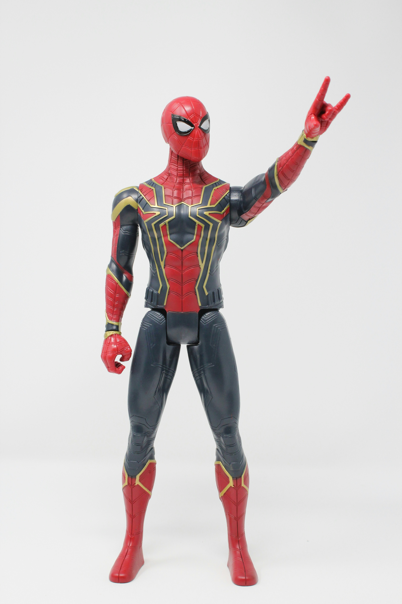
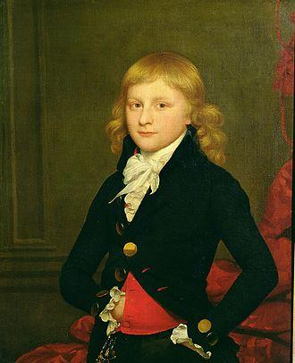
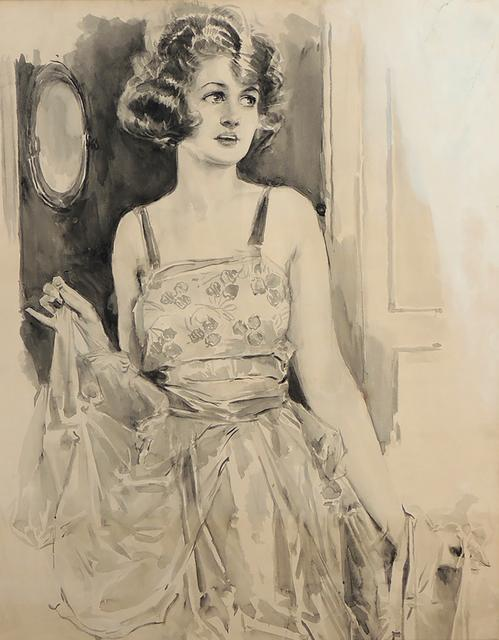

Dance any beats with style transfer
ChoreoMuse enables style-controllable, high-fidelity dance video generation across diverse musical genres and dancer identities, with support for arbitrary reference individuals at any resolution. We showcase five individuals from different scenarios, each paired with the same music but exhibiting distinct choreography styles.
- 
- 
-

- 
Video generation with the same music piece but different choreography styles (High-resolution video may lag on first play. Replay if needed)
House Dance
-
Loose Legs -
Train -
Heel Step -
Chase -
Shuffle
Break Dance
-
Twist -
Two Step -
Roll Two Step -
Up Rock -
Battle Rock
Ballet Jazz Dance
-
Paddbre -
Pas De Chat -
Entrelace -
Grand Jete -
Passe
Lock Dance
-
Twirl -
Point -
Crap -
Pacing -
Rock Steady
Waack Dance
-
Twirl -
Open -
Pose -
Walk -
Shake
BibTeX
@inproceedings{choreomuse,
title = {ChoreoMuse: Robust Music-to-Dance Video Generation with Style Transfer and Beat-Adherent Motion},
author = {Wang, Xuanchen and Wang, Heng and Cai, Weidong},
booktitle = {Proceedings of the 33rd ACM International Conference on Multimedia},
year = {2025},
}